Thoughtful resources
Documenting things:
openly for future us
Julia Stewart Lowndes & the Openscapes Community
THINGS
all the things
- code & analyses
- teaching resources
- onboarding & community
- fieldwork/lab protocols
- blogs
- events
FUTURE US
mindset & habit
ourselves, teams, communities
in the next hour, week, decades
intentional, inclusive
Documenting things doesn’t have to be painful
In fact, it’s supposed to be helpful.
It does take time.
Slowing down to speed up.
Purpose today: to help you document things effectively & hear stories of how putting a focus on documentation can be help teams be efficient, productive, and less lonely.
6-min lightening talk (inspired by Jenny Bryan’s Naming Files 💙)
9-min stories from NASA Openscapes & beyond
Documenting things
Have a place
Have an audience
Design for readability, accessibility, and navigation
Have a place
It doesn’t matter where at first. Just write it down.
Google Doc
Notion
Wiki
Forum/Issues/Discussion
Quarto/Jupyter book
Slide deck
Write as you go
Develop the habit of writing things down in this place; break down otherwise looming tasks.
TODO: GIF of this and embed
Arrow keys + shift + option (Mac)
Paste from your email/slack and put it here instead
Write in a modular way
Writing in small bits is less daunting to write & maintain collaboratively.
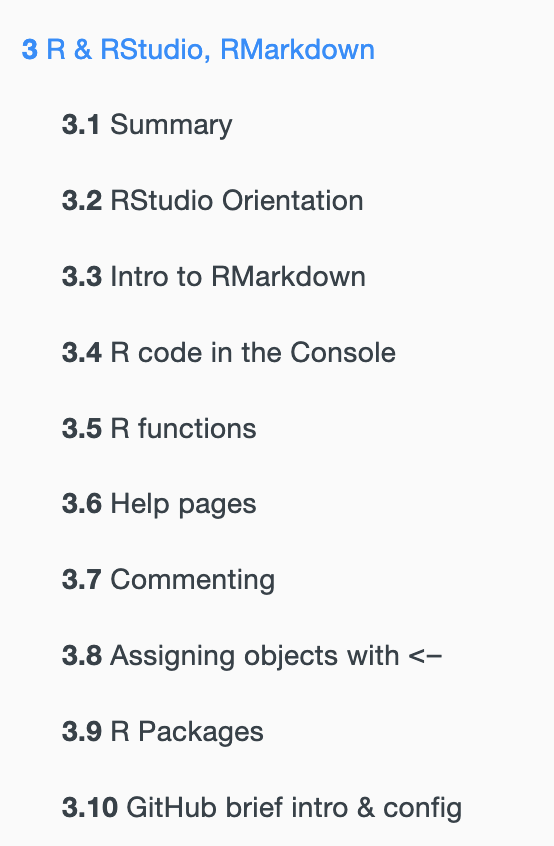
No true order;
you’ll move things around.
Lowndes & Horst, R for Excel Users
Make space
Claim time to write - this won’t document itself! One pasted email at a time.
Tell people you’re documenting things: increase visibility, value, contributors.
Have an audience
You’re writing this for someone. Often, many audiences.
Make it engaging - doesn’t have to be dry or distant.
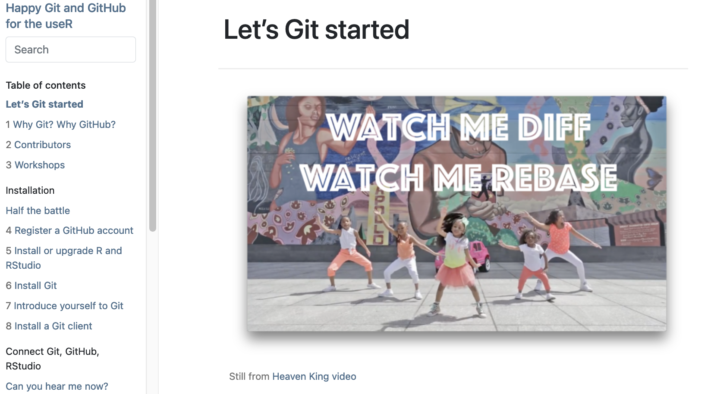
Bryan, Happy Git with R
Write in an inclusive tone
We’re in this together: Your readers are intelligent people, who are here to learn from you.
Consider your goals and style that welcome readers; e.g. avoid words that trivialize like ‘simply’.
- Purpose, Outcomes, Process (POP)
- Carpentries Curriculum Developers Handbook (CDH)
- eScience SnowEx Hackweek Team-building (slides & website)
Narrate code in small chunks
Write short narrations for your code as you’d say it out loud. Match this with your purpose; it’s especially important for teaching.
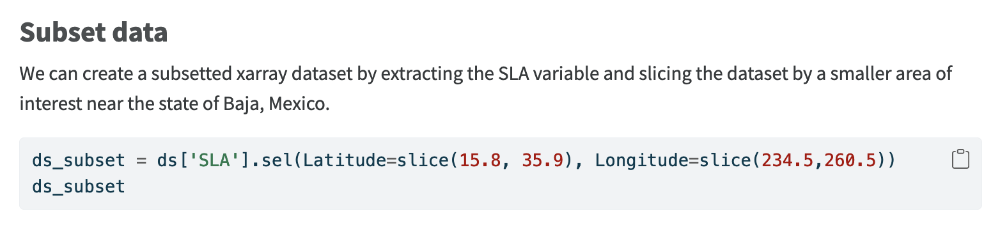
Amy Steiker & NASA Openscapes Mentors, NASA Earthdata Cloud Clinic
Quarto now has a cool code annotation feature to help!
Share it
Share online so people can find it - readers, contributors, users.
Consider permissions & leverage different technologies to leave breadcrumbs.
NOAA Fisheries Open Science, Resource Book
Design for readability, accessibility, & navigation
TODO: screenshot. Alison Hill? Desiree?
Use section headers
Section headers are important for screen readers to describe sections and flow.
You can anchor directly to them to share an anchored URL.
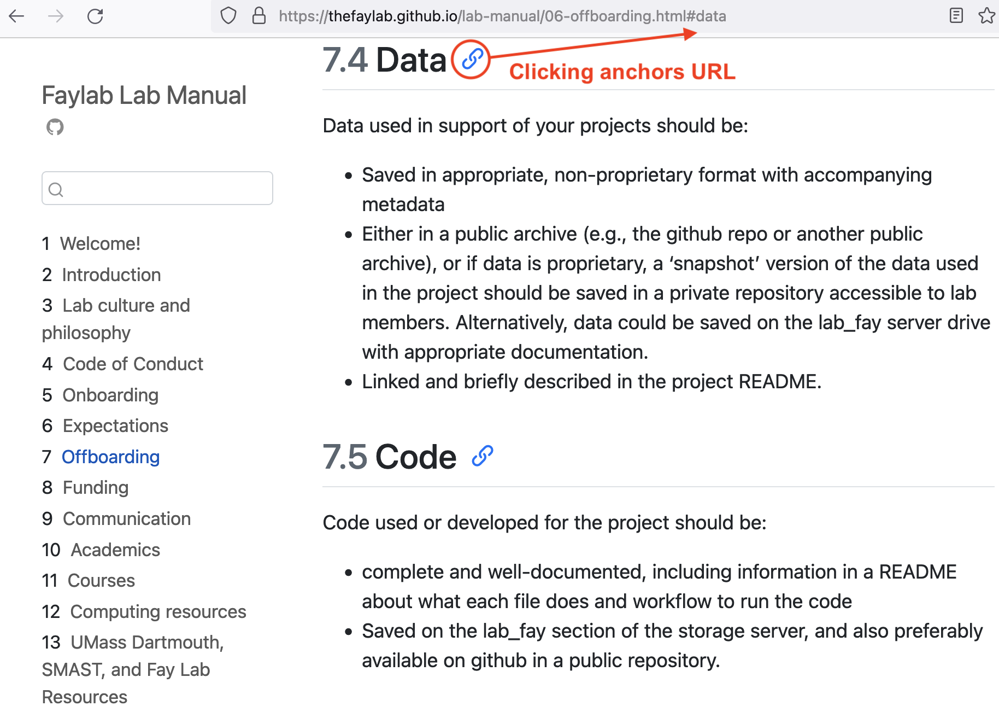
Fay Lab, The FayLab Manual
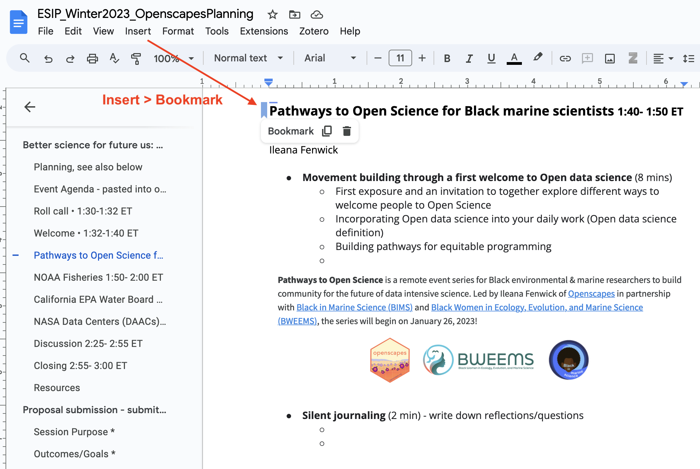 Bookmark">
Clatterbuck et al, 3 approaches for the year of open science.
Naming things 💙 is key here - “embrace the slug”
Use text formatting
Formatting helps your readers follow along.
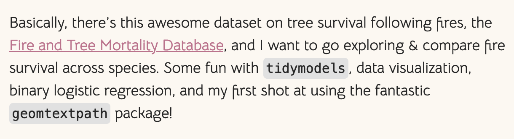
Distinguish code with fonts; (in Markdown use backticks: `code` )
Hyperlink text like Fire and Tree Mortality Database, not that this important thing is here.
Alternative text (“alt text”)
Documenting things
Have a place
Have an audience
Design for readability, accessibility, and navigation
What’s possible from this
Putting a focus on documentation has enabled NASA
to collaborate across divisions and support users transitioning to Earthdata Cloud
Teaching NASA Earthdata Cloud
…by learning as a community

TODO ADD LOGOS Steiker et al, Working with NASA Earthdata in the Cloud
Place & space: Earthdata Cloud Cookbook
GitHub organization • Quarto notebook collection • 2i2c JupyterHub • Regular Coworking

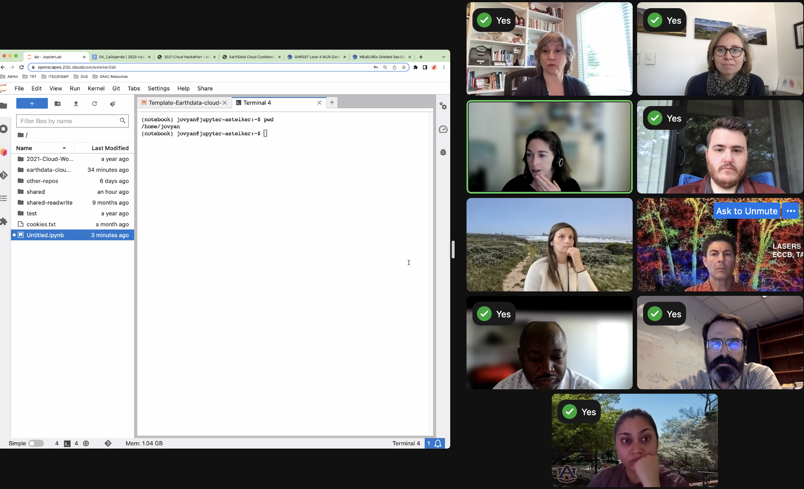
quarto Cookbook,
JupyterHub,
regular coworking meetings & Slack
Audience: Us first, then others
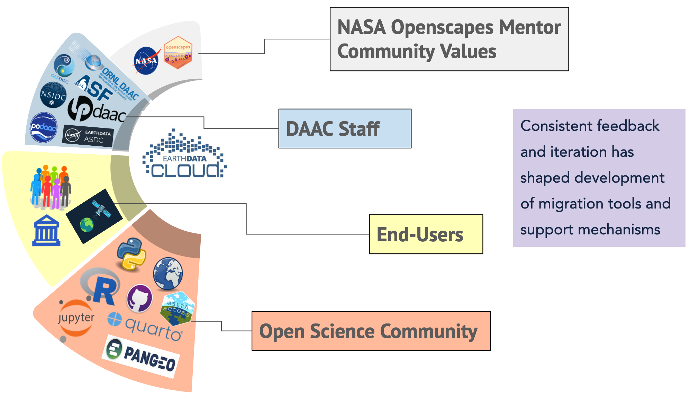Steiker et al, Working with NASA Earthdata in the Cloud
Design: Meet people where they are
We don’t assume experience. Workflows: .ipynb, .Rmd; VSCode, Jupyter, RStudio, MATLAB.
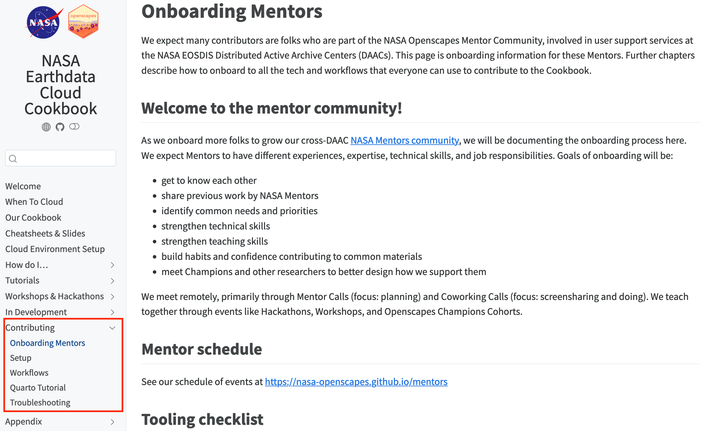
NASA Openscapes Community, NASA Earthdata Cloud Cookbook
Design: Reuse & complement existing work
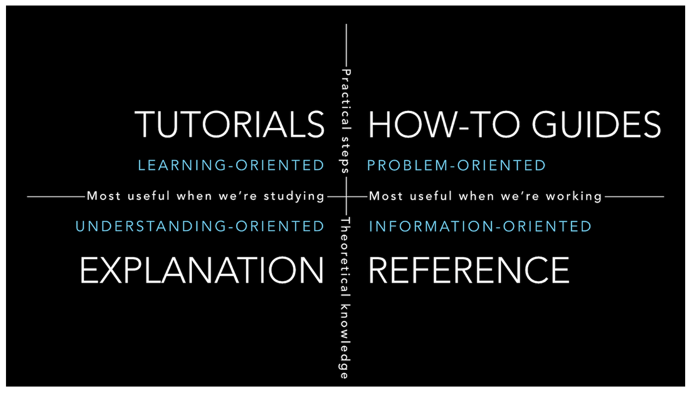
Diátaxis & Divio, Documentation System
Framework - helped NASA Mentors focus on learning & problem oriented documentation.
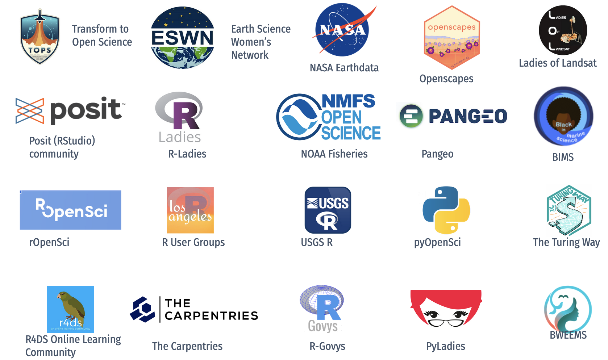
Bri Lind at the NASA Hyperwall, Getting to Know Open Science
Open community - helped NASA Mentors learn, scope, co-develop, and share.
What’s possible from this
Putting a focus on documentation has enabled
the NASA Openscapes community to grow
through intentional onboarding over 3 years
3 places for 3 audiences, designed for onboarding
Place: Project website
Audience: NASA Leadership

Visibility,
welcome participation,
info lives outside email

What’s possible from this
Putting a focus on documentation has enabled other organizations reuse this approach
TODO: logos: NOAA, Cal EPA, Pathways to Open Science
Documenting things …
Is important
- Helps people feel less lost and like they belong
- Saves time - fewer emails asking where things are
- Make invisible work visible
Takes time
- Part of the job. Paid time.
- Learning and inspiration is cyclical - Jenny Bryan Naming things
- Reuse, don’t reinvent.
Documenting things: Best advice to get started
TODO: BRING IN OUR EDITORIAL HERE We documented this in an Editorial
MAKE SPACE
Take these concepts to new places
Have a place
Have an audience
Design for readability, accessibility, and navigation
Thank you
TODO
Sam Csik for CSS help
Resources
TODO